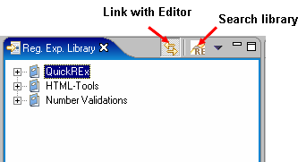
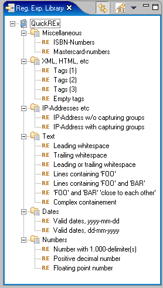
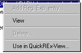
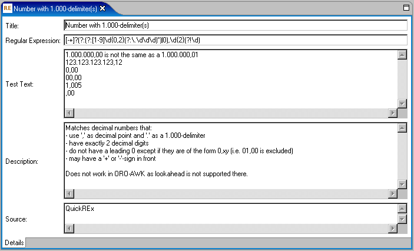
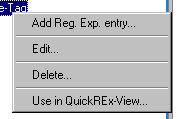
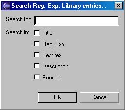
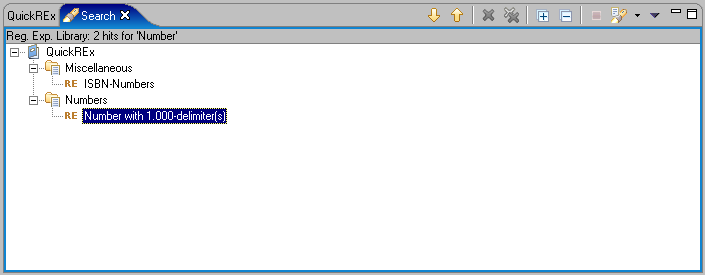
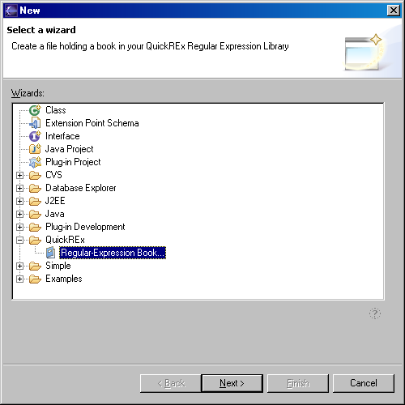
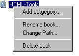
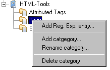

If the Plugin is installed, you should find a view named Reg. Exp. Library offered under Window > Show View > Other... in the category QuickREx.
The view looks as displayed in the screenshot below.
The Regular Expression Library contains 'Books' which in turn contain 'Categories' which hold 'Regular Expression Entries'. Initially, the library only contains one book named 'QuickREx'. This book is read-only, you can not delete it or change its name/path nor can you add or change categories or entries.
The contents of the default book are displayed in the screenshot below:
The entries can be used as a starting point fo your own expressions, or as they are. They are partly collected from public sources, partly changed or written for the plug-in.
The default book contents can not be changed through the standard processes (i.e. from within the plug-in). However, since they are held in an .xml-file, you could adapt them to your needs. However, as you will shortly see, there is a better way to keep track of your own useful expressions.
If you select an entry in one of the default books' categories and right-click, the context-menu displayed below opens.
You from here you can either bring up an editor to display the entries details by selecting 'View' (you could also do this by double-clicking the entry), or you can use the entries expression and test-text directly in the QuickREx-view (see here) by selecting 'Use in QuickREx-View...'. Note that any contents in the QuickREx-View are overwritten by this. Global flags and the RE-implementation as selected are unchanged.
Since the default book is read-only, the other menu-entries are disabled in that book.
The editor for the library-entries is shown in the following screen-shot.
The editor and the library-tree in the view can be linked as usually with Eclipse-views and editors (use the menu or the cool-bar of the library-view).
For all books other than the default book (see below for how to add your own books), the entries can be edited. In this case, the context-menu looks as follows:
'View' is replaced by 'Edit...', which again opens an editor with the currently selected entry, the entry can be deleted using 'Delete...', and you can add an entry following the currently selected one by using 'Add Reg. Exp. entry'. This last option will open a dialog asking you for a title for the entry and then open a new editor with the title already entered. Note that titles must be unique within category.
In the QuickREx-editor, the field for entering the regular expression also offers TAB-completion (just as the QuickREx-view does). The TAB-completion is realized with the same mechanism as for the QuickREx-view, so the remarks made here about how TAB-completion is customizable apply.
You can search the library using the cool-bar or the menu-action of the library-view (see screenshot on top of page). Clicking on the search-action brings up the following dialog:
In this dialog, you can enter the search-phrase and decide which parts of the library-entries should be searched. Search-results are displayed in the usual Eclipse search-result view as shown below.
For keeping your own collection of useful regular expressions, you can add books to the regular expression library. To do so, use the wizard contributed under 'File > New > Other...' in the category 'QuickREx' as shown in the screenshot below.
The wizard has a single page asking you to enter a path to the xml-file to keep the contents of the book and a name for the book. The book is added at the end of the list of books on finishing the wizard.
Note that when an existing file is selected, the file will be overwritten (a warning will be given). Note also that the contents of the regular expression library are only persisted on saving a regular expressino entry or on regular shut-down of the workbench. The file holding the contents of the new book will thus not be immediatly visible after creatino of the book.
Apart from the default book in the library, which is read-only, all books have the context-menu shown below.
From this menu you can:
Apart from the categories in the default book in the library, which are read-only, all categories have the context-menu shown below.
From this menu you can: